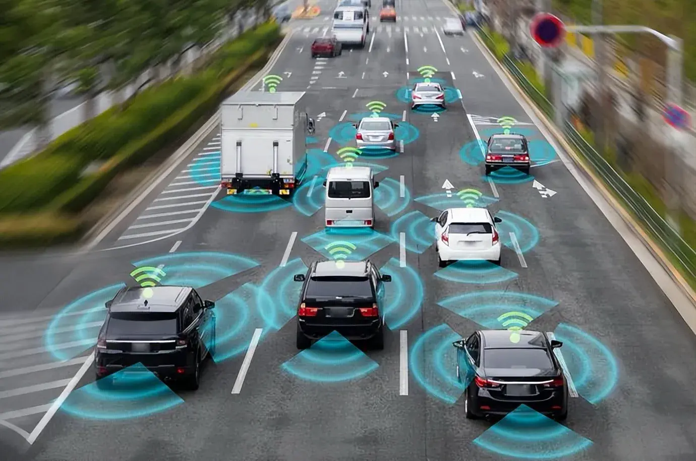
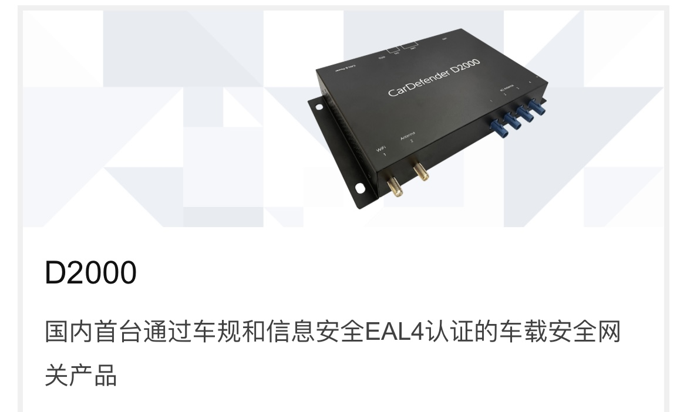
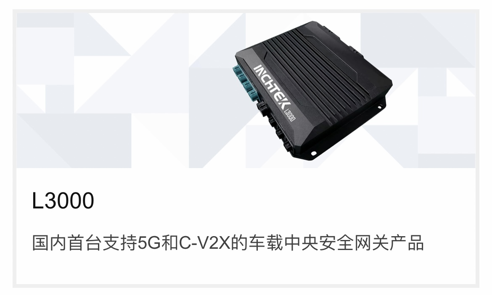
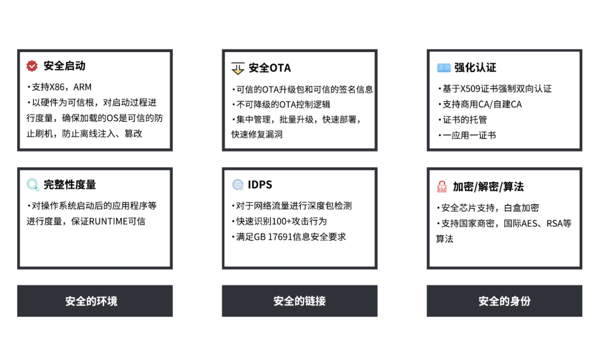

On the future road, vehicles will reach level 5 autonomous driving without the need for manual intervention. However, nowadays, car manufacturers and start-ups are working hard to ensure that Level 3 and Level 4 autonomous driving technologies are correct. Cameras, radars, light detection and ranging (LIDAR), and many other onboard sensors are being used to capture road condition information, notify appropriate driving behavior, and prevent potential accidents. To achieve this goal, nearly 1TB of data will be stored in vehicles in the near future, and this amount of data will surge to over 2TB in the next decade.
However, the future of cars is not just about autonomous driving. Cars will use "vehicle to everything" or "V2X" technology to communicate with each other, road infrastructure, and even pedestrians. Through this way of communication, you can manage the fleet of autonomous vehicle to make travel faster and safer.

Yunchi Future - Central Network Controller (CNCU)
The first vehicle grade central security and network controller platform for autopilot vehicles
Yunchi Future's series of products, such as D2000, L3000, A1000, tailored specifically for autonomous driving and intelligent connected vehicles, have passed vehicle level and EAL4 certification. They can provide heterogeneous network networking solutions for intelligent vehicles and resist the threat of network attacks, meeting the different needs of different vehicle network architectures for connected communication and security; We have taken the lead in mass production and implementation in leading autonomous driving companies such as Baidu Apollo and JD Logistics, meeting the requirements of high safety, high performance, and high reliability for autonomous driving.


Intelligent Automotive Information Security
Security middleware is an information security software framework based on automotive embedded operating systems, providing information security capabilities for various ECU/DCU components inside intelligent vehicles, as well as vehicle networking system terminals. It includes various components required to build a security framework for onboard information systems, providing security capabilities such as firewalls, data encryption, authentication and authentication, attack protection, intrusion detection, and security logs; And support remote configuration methods for security policies, helping intelligent automotive electronic components and in vehicle connected terminals easily build information security capabilities.

云驰智云VSOC
Building a threat model based on massive data, achieving full process risk control from collection, analysis, early warning, and disposal, and ensuring real-time vehicle driving safety. We can provide automotive network security situational awareness monitoring system products and solutions, or customize enterprise level solutions and development services to achieve visible, manageable, controllable, and trustworthy automotive network information security.
Collect operation and maintenance services to meet the requirements of national, industry, and enterprise automotive network information security. Analyze and evaluate monitoring data such as automotive network anomalies and attack events, develop emergency response plans and disposal strategies, execute network security strategy updates, and enhance the protection capabilities of the automotive vehicle network system.
Compliance services and toolchain
Provide customized information security consulting services for OEM and Tier1. Can help customers establish a full lifecycle CSMS information security management system that complies with regulations and standard specifications (such as UNECE/WP29 and ISO/SAE 21434). We can provide TARA tool products to assist customers in establishing vehicle and component level TARA analysis technical specifications, forming a reusable TARA knowledge base, traceable security requirements, traceable security vulnerabilities, and compliance oriented gap analysis.
The combination of Internet of Vehicles and IoT by Beijing Yunchi Future Technology Co., Ltd
1. Data collection and sensing
Deployment of IoT devices
Vehicle sensors: Autonomous vehicles are equipped with various sensors, including radar, LiDAR, cameras, ultrasonic sensors, etc., to monitor the surrounding environment and vehicle status in real-time.
Transportation infrastructure sensors: Install IoT sensors at traffic signals, roadside units, parking lots, and other locations to monitor traffic flow, parking space usage, road condition information, etc.
V2X communication technology
Vehicle to Vehicle Communication (V2V): Real time data is shared between vehicles, such as position, speed, direction, acceleration, etc., to achieve collaborative driving and avoid collisions.
Vehicle to Road Communication (V2I): Vehicles exchange information with traffic infrastructure, obtain signal light status, road construction information, traffic accident warnings, etc., optimize driving paths and safety.
2. Data transmission and communication
IoT Network and edge computing
Wireless communication technology: Utilizing wireless communication technologies such as 5G, Wi Fi, and LoRa to achieve high-speed data transmission between vehicles and IoT devices.
Edge computing: deploy edge computing nodes near vehicles and transportation infrastructure to process and analyze data in real time, reduce delay and improve response speed.
V2X communication standard
DSRC and C-V2X: Combining DSRC (Dedicated Short Range Communication) and C-V2X (Cellular Connected Vehicles) technology, ensuring low latency and high reliability communication, achieving wide coverage and real-time data exchange.
3. Data processing and analysis
IoT platform and cloud computing
Big data analysis: Summarizing and processing large amounts of data from vehicles and infrastructure on cloud platforms, utilizing machine learning and AI technology for pattern recognition, predictive analysis, and decision support.
Real time data processing: Through streaming data processing technology, real-time analysis and response of data transmitted by vehicles and transportation infrastructure are provided, providing real-time feedback.
Autonomous driving decision system
Environmental perception: Integrating multi-sensor data, constructing high-precision environmental models, and achieving comprehensive perception of the surrounding environment.
Path planning and control: Based on real-time data and AI algorithms, perform path planning and vehicle control to ensure safe and efficient autonomous driving.
4. Intelligent decision-making and control
IoT automation control
Intelligent traffic signals: dynamically adjust the timing of traffic signals based on real-time traffic flow data, optimize traffic flow, and reduce congestion.
Intelligent parking management: Real time monitoring of parking space usage, guiding autonomous vehicles to find vacant parking spaces, and improving parking efficiency.
Autonomous driving control system
Vehicle control: the auto drive system adjusts the speed, direction and acceleration/deceleration of the vehicle in real time according to the sensor data and V2X communication information to achieve safe driving.
Collaborative driving: Through vehicle to vehicle communication, achieve collaborative driving between vehicles, avoid collisions, and improve traffic flow efficiency.